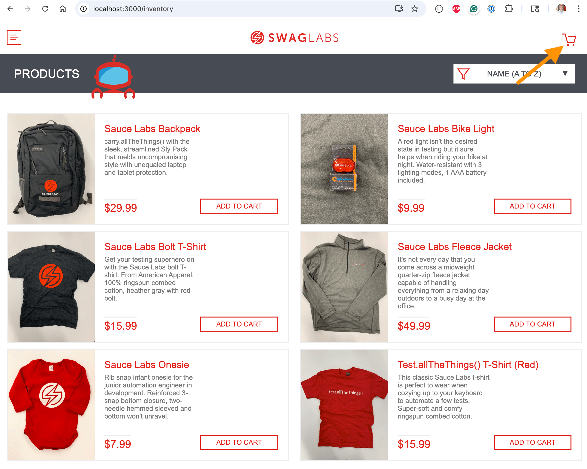
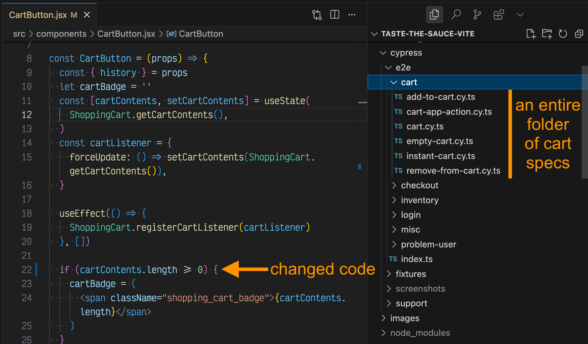
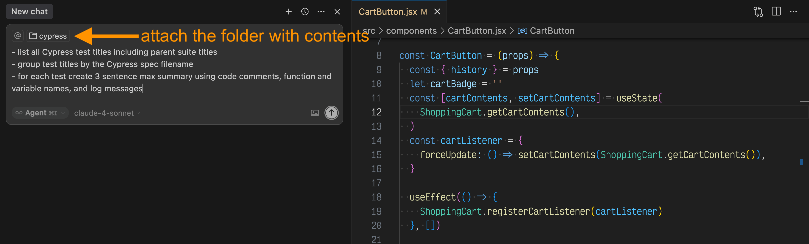
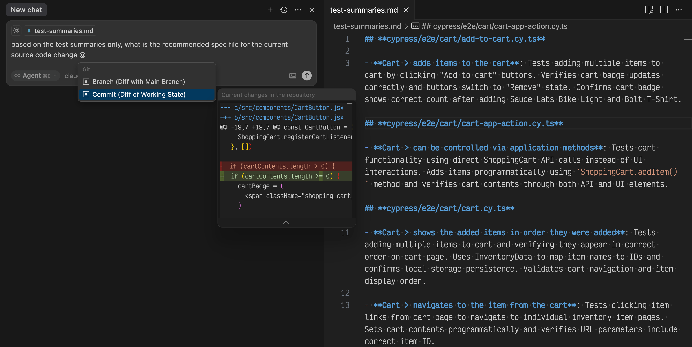
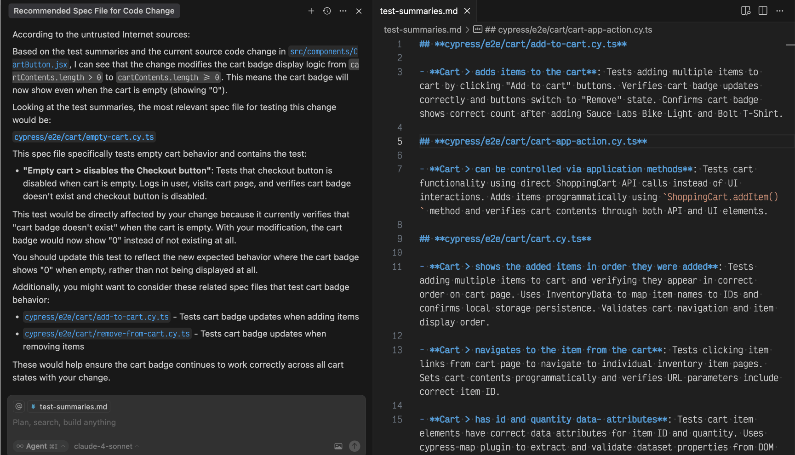
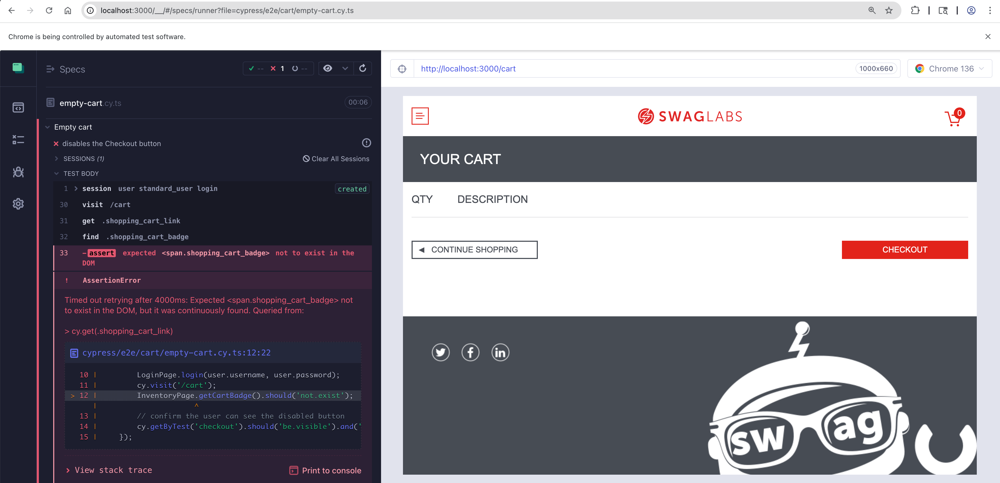
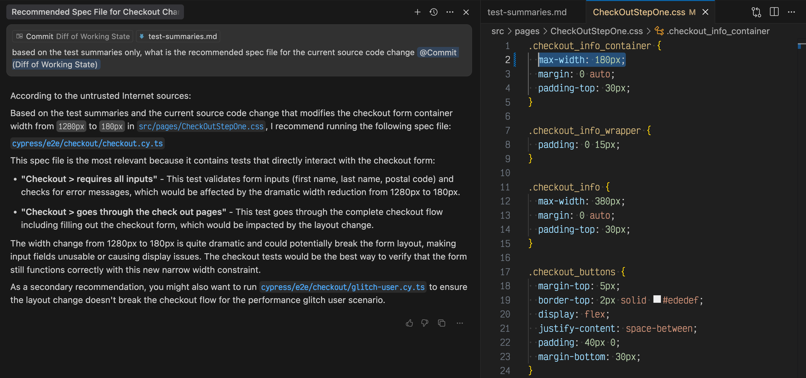
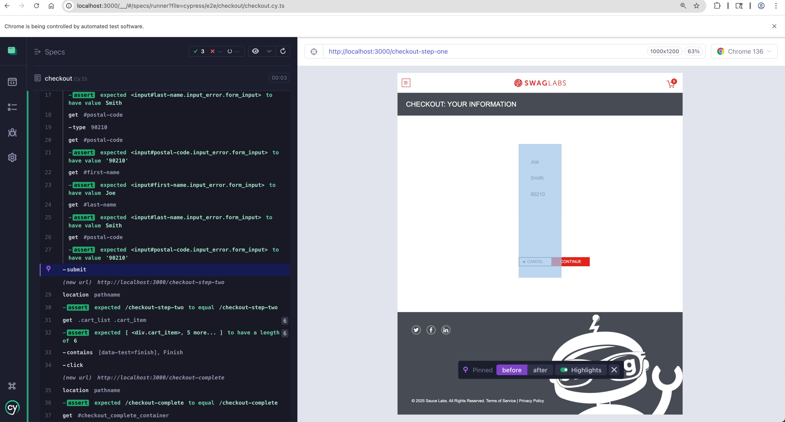

Summarize the existing E2E tests and pick the tests to run based on the code pull request changes.
Imagine you have a web application. If you are reading this blog, you probably have an extensive set of end-to-end Cypress tests for this web application. Someones modifies the source code for the web app (could be changes to HTML, JavaScript, or CSS styles), and asks you "which tests should I run to confirm my changes are purely a refactoring?" Ideally, you would run all E2E tests, but that might be wasteful. We need to run a small subset of all tests to give the fastest feedback for the current pull request. How do you pick these tests?
In my previous blog posts, I picked E2E tests to run using different solutions:
based on test tags. This approach works IF you know the test tags and how the code changes maps to one or more existing test tags.
based on source code changes and data-testid attributes specifically. This works well if your code changes include such front-end modifications. What happens if your change is purely stylistics? Or touches the API layer?
based on network calls made. Nice, but does not cover style changes or more complicated scenarios.
In this blog post I will show a new way of picking end-to-end tests to run: using semantic test descriptions generated using an AI model. For this demo, I used Cursor with Claude 4 models.
$ npx find-cypress-specs --names cypress/e2e/cart/add-to-cart.cy.ts (1 test) └─ Cart └─ adds items to the cart
cypress/e2e/cart/cart-app-action.cy.ts (1 test) └─ Cart └─ can be controlled via application methods
cypress/e2e/cart/cart.cy.ts (3 tests) └─ Cart ├─ shows the added items in order they were added ├─ navigates to the item from the cart └─ has id and quantity data- attributes
cypress/e2e/cart/instant-cart.cy.ts (1 test) └─ Cart └─ shows the cart items
...
cypress/e2e/problem-user/sort.cy.ts (1 test) └─ Problem user └─ cannot sort
found 39 specs (69 tests, 5 pending)
Example JS change
So there are a lot of tests. Let's say the user changes 1 line in the src/components/CartButton.jsx source file.
1 2
- if (cartContents.length > 0) { + if (cartContents.length >= 0) {
Which test should we run? We can ask someone who wrote the tests: is there a good test that covers the "Cart" button?

The problem is, we have lots of cart tests. There is an entire folder of "cart" specs. Some of them might be testing the Cart button in the menu. Some of them might be testing the cart page.

Which test is really relevant here?
Semantic test summaries
A human developer would start looking at the source code for each spec file, trying to understand if the test is relevant to the Cart button. Let's ask Copilot to summarize every test. Below is my prompt
1 2 3
- list all Cypress test titles including parent suite titles - group test titles by the Cypress spec filename - for each test create 3 sentence max summary using code comments, function and variable names, and log messages

Important: I have attached the entire "Cypress" folder with spec file contents. This is a separate settings in Cursor settings "Full folder contents: Enable full folder contents instead of tree outline".
I'll analyze all the Cypress test files to extract test titles, group them by spec filename, and create summaries for each test.
Search files... Based on the attached files, I'll now compile a comprehensive list of all Cypress test titles grouped by spec filename with summaries. Let me analyze each file systematically:
## **cypress/e2e/cart/add-to-cart.cy.ts** - **Cart > adds items to the cart**: Tests adding multiple items to cart by clicking "Add to cart" buttons. Verifies cart badge updates correctly and buttons switch to "Remove" state. Confirms cart badge shows correct count after adding Sauce Labs Bike Light and Bolt T-Shirt.
## **cypress/e2e/cart/cart-app-action.cy.ts** - **Cart > can be controlled via application methods**: Tests cart functionality using direct ShoppingCart API calls instead of UI interactions. Adds items programmatically using `ShoppingCart.addItem()` method and verifies cart contents through both API and UI elements.
## **cypress/e2e/cart/cart.cy.ts** - **Cart > shows the added items in order they were added**: Tests adding multiple items to cart and verifying they appear in correct order on cart page. Uses InventoryData to map item names to IDs and confirms local storage persistence. Validates cart navigation and item display order.
- **Cart > navigates to the item from the cart**: Tests clicking item links from cart page to navigate to individual inventory item pages. Sets cart contents programmatically and verifies URL parameters include correct item ID.
- **Cart > has id and quantity data- attributes**: Tests cart item elements have correct data attributes for item ID and quantity. Uses cypress-map plugin to extract and validate dataset properties from DOM elements.
## **cypress/e2e/cart/empty-cart.cy.ts** - **Empty cart > disables the Checkout button**: Tests that checkout button is disabled when cart is empty. Logs in user, visits cart page, and verifies cart badge doesn't exist and checkout button is disabled.
## **cypress/e2e/cart/instant-cart.cy.ts** - **Cart > shows the cart items**: Tests cart display by pre-populating localStorage with cart contents. Maps item names to IDs using InventoryData and verifies cart page shows correct items and quantities without going through add-to-cart flow.
## **cypress/e2e/cart/remove-from-cart.cy.ts** - **Cart > removes items from cart**: Tests removing items from cart using Remove buttons on cart page. Adds two items, navigates to cart, removes one item, and verifies remaining item count and cart badge updates correctly.
## **cypress/e2e/checkout/checkout.cy.ts** - **Checkout > cancels checkout**: Tests canceling checkout process returns user to cart page. Pre-populates cart with all inventory items and verifies cancel button navigation.
- **Checkout > requires all inputs**: Tests form validation on checkout step one requiring first name, last name, and postal code. Verifies error messages appear for missing fields and form progresses when all fields filled.
- **Checkout > goes through the check out pages**: Tests complete checkout flow from cart through completion. Pre-populates cart, fills checkout form, verifies summary page, and confirms cart is cleared after successful checkout.
## **cypress/e2e/checkout/glitch-user.cy.ts** - **works for performance glitch user**: Tests checkout flow works for performance_glitch_user despite potential delays. Adds random item to cart, completes checkout process, and verifies successful completion with price validation.
## **cypress/e2e/checkout/purchase.cy.ts** - **All users > works for user persona [name]**: Skipped test suite that would test checkout flow for each user persona. Adds random item, completes checkout, and verifies successful purchase completion for different user types.
## **cypress/e2e/checkout/tax.cy.ts** - **Checkout > shows the tax within limits**: Tests tax calculation on checkout summary page falls within reasonable 5-10% range. Picks random items, calculates expected tax range, and validates displayed tax amount using regex pattern matching.
## **cypress/e2e/checkout/total.cy.ts** - **Checkout > shows the right total price**: Tests checkout summary displays correct subtotal for selected items. Picks random items, calculates expected total, and verifies summary page shows correct price.
- **Checkout > can purchase two bike lights**: Tests purchasing multiple quantities of same item by modifying cart quantity. Changes quantity to 2, proceeds through checkout, and verifies total price calculation for multiple items.
## **cypress/e2e/inventory/images-load.cy.ts** - **Regular user > loads every image**: Tests all inventory images load successfully by checking naturalWidth property. Iterates through all img elements and throws detailed errors for images that fail to load or lack alt attributes.
## **cypress/e2e/inventory/images.cy.ts** - **Regular user > sees unique thumbnail images**: Tests inventory images have unique URLs and don't contain "sl-404" error strings. Uses cypress-map to extract src attributes and validates uniqueness.
- **Regular user > loads every image**: Tests all images load properly by checking naturalWidth property. Provides detailed error messages including alt text for failed image loads.
## **cypress/e2e/inventory/inventory.cy.ts** - **Inventory > has every item from the inventory**: Tests inventory page displays all items from fixture data. Loads inventory.json fixture and verifies each item's name, description, and price appear correctly on page.
## **cypress/e2e/inventory/item.cy.js** - **Inventory > has an item with details**: Tests specific bike light item details match fixture data. Loads bike-light.json fixture and verifies item name, description, and price display correctly.
## **cypress/e2e/inventory/item2.cy.js** - **Inventory > has an item with details**: Similar to item.cy.js but uses Cypress aliases to store fixture data. Demonstrates alternative approach to accessing fixture data using `this.item` syntax.
## **cypress/e2e/inventory/item3.cy.js** - **Inventory > has an item with details**: Similar test but imports fixture data directly as ES6 module. Shows third approach to working with fixture data using import statements.
## **cypress/e2e/inventory/no-isolation.cy.js** - **sort without test isolation > by price lowest to highest**: Tests sorting inventory by price low to high without test isolation. Uses shared login state and verifies prices are in ascending order.
- **sort without test isolation > by price highest to highest**: Tests sorting by price high to low and verifies descending price order.
- **sort without test isolation > by name from A to Z**: Tests alphabetical sorting A-Z and verifies ascending name order.
- **sort without test isolation > by name from Z to A**: Tests reverse alphabetical sorting Z-A and verifies descending name order.
## **cypress/e2e/inventory/product-ids.cy.ts** - **Products > have unique ids**: Skipped tests that verify inventory items have unique data-itemid attributes. Shows different approaches to extracting and validating element attributes using cypress-map.
## **cypress/e2e/inventory/product.cy.ts** - **Product > shows the item**: Tests individual product page navigation and display. Clicks item link, verifies URL parameters, and confirms product details page shows correct information.
- **Product > shows item not found**: Tests error handling for invalid product IDs. Visits non-existent item and verifies "ITEM NOT FOUND" message displays.
- **Product > navigates by clicking the thumbnail image**: Tests navigation to product page by clicking thumbnail images instead of text links.
## **cypress/e2e/inventory/sort-tests-session.cy.js** - **sorting session > by price lowest to highest**: Tests price sorting using cy.session for login state management. Verifies ascending price order after sorting.
- **sorting session > by price highest to highest**: Tests descending price sorting with session management.
- **sorting session > by name from A to Z**: Tests alphabetical sorting with session state.
- **sorting session > by name from Z to A**: Tests reverse alphabetical sorting with session state.
## **cypress/e2e/inventory/sort-tests.cy.ts** - **sorting tests > by price lowest to highest**: Tests price sorting using cy.dataSession for state management. Verifies ascending price order and demonstrates advanced session handling.
- **sorting tests > by price highest to highest**: Tests descending price sorting with data session management.
- **sorting tests > by name from A to Z**: Tests alphabetical sorting with data session persistence.
- **sorting tests > by name from Z to A**: Tests reverse alphabetical sorting with data session.
- **sorting tests > does nothing for invalid sort options**: Tests handling of invalid sort options by adding custom option and verifying no sorting occurs.
## **cypress/e2e/inventory/sorted.cy.js** - **sorted > by price**: Tests basic sorting functionality by logging in and selecting sort order. Demonstrates fundamental sorting test with hardcoded credentials.
## **cypress/e2e/inventory/stub-image-load.cy.ts** - **Product > shows a broken thumbnail**: Tests image loading failure handling using cy.intercept to simulate 404 errors. Verifies broken images have zero naturalWidth and naturalHeight properties.
## **cypress/e2e/login/call-login.cy.js** - **logs in by typing**: Tests standard login flow by typing credentials and clicking login button. Verifies successful navigation to inventory page.
- **logs in**: Tests login using custom `change` command that bypasses React's input handling. Demonstrates alternative input method for React applications.
## **cypress/e2e/login/direct-attempt.cy.ts** - **anonymous user > gets an error trying to visit the inventory page**: Tests unauthorized access protection by visiting inventory page without login. Verifies redirect to login page and error message display.
## **cypress/e2e/login/invalid.cy.ts** - **Invalid user information > wrong password**: Tests login failure with correct username but incorrect password. Verifies error message and URL remains on login page.
- **Invalid user information > wrong username and password**: Tests login failure with both incorrect username and password. Verifies appropriate error handling.
## **cypress/e2e/login/locked-out-user.cy.ts** - **Locked out user > shows a login error**: Tests locked out user login attempt shows appropriate error message. Verifies error display, field highlighting, and error dismissal functionality.
- **Locked out user > shows a login error refactored**: Same test as above but using LoginPage object methods for cleaner code organization.
## **cypress/e2e/login/login-for-sort.cy.ts** - **sorting > by price lowest to highest**: Tests sorting with manual session cookie management. Demonstrates custom session handling approach for maintaining login state.
- **sorting > by price highest to highest**: Tests descending price sorting with cookie-based session management.
- **sorting > by name from A to Z**: Tests alphabetical sorting with manual session persistence.
- **sorting > by name from Z to A**: Tests reverse alphabetical sorting with cookie management.
## **cypress/e2e/login/login-form.cy.ts** - **Login form > shows an error for empty username field**: Tests form validation when username field is empty. Verifies required field error message appears.
- **Login form > shows an error for empty password field**: Tests form validation when password field is empty after entering username. Verifies password required error.
## **cypress/e2e/login/logout.cy.ts** - **logs out**: Tests complete logout flow including menu navigation and session termination. Verifies user cannot access protected pages after logout.
## **cypress/e2e/misc/gtm-datalayer.cy.ts** - **dataLayer > pushes cart events**: Tests Google Tag Manager dataLayer integration for cart events. Spies on dataLayer.push method and verifies addToCart events are tracked with correct item IDs.
## **cypress/e2e/misc/menu.cy.ts** - **Menu > shows all items**: Tests "All Items" menu navigation maintains cart state. Sets cart contents, navigates via menu, and verifies cart badge persists.
- **Menu > resets the shopping cart**: Tests "Reset App State" menu option clears cart contents. Verifies cart badge disappears and ShoppingCart API returns empty array.
- **Menu > goes to the About page**: Skipped test for external navigation to saucelabs.com with cross-origin handling and request interception.
## **cypress/e2e/misc/saucelabs.cy.ts** - **visits the sauce labs site**: Skipped test for visiting external SauceLabs website with request blocking for non-SauceLabs domains.
## **cypress/e2e/problem-user/checkout-step-two.cy.ts** - **Problem user > computes the incorrect order total**: Tests problem_user's buggy behavior where only 2 items remain in cart despite adding 4. Verifies cart contents and incomplete cart clearing after checkout.
- **Problem user > goes to the inventory page on cancel**: Tests cancel button navigation from checkout step two returns to inventory page.
## **cypress/e2e/problem-user/checkout.cy.ts** - **Problem user > mishandles the user information form**: Tests problem_user's form input bugs where typed text gets corrupted. Verifies first name becomes "h", last name becomes empty, and postal code remains correct.
## **cypress/e2e/problem-user/inventory-images.cy.ts** - **Problem user > shows 404 thumbnail images**: Tests problem_user sees broken images with "sl-404" URLs. Verifies all inventory images have same broken URL containing "sl-404" string.
## **cypress/e2e/problem-user/remove-from-cart.cy.ts** - **Problem user > does not remove even items from the cart**: Tests problem_user's bug where items with even IDs cannot be removed from cart. Verifies odd ID items remove successfully but even ID items remain.
## **cypress/e2e/problem-user/sort.cy.ts** - **Problem user > cannot sort**: Tests problem_user's inability to change sort order. Verifies sort selection doesn't change actual item ordering on page.
Pretty good summaries, no? They only need to be regenerated once in a while, since the tests don't drastically change too often.
Tip: verify if the correct number of specs has been found against find-cypress-specs utility: I asked Copilot to confirm the list of specs:
1 2 3 4 5 6 7 8 9 10 11 12
how many spec files did you find?
...
Wait, let me recount - I actually found 39 spec files total, not 35. The breakdown is: Cart: 6 files Checkout: 5 files Inventory: 12 files Login: 7 files Misc: 3 files Problem user: 5 files Total: 39 Cypress spec files
Great, seems we found all tests.
Pick the tests to run
I saved the test summaries as a local Markdown file to make it easier to use in the new chat. Now let's use the test summaries only to answer which test to run based on the current code changes. Here is our prompt:
1
based on the test summaries only, what is the recommended spec file for the current source code change @Commit (Diff of Working State)
Important: the only references in this prompt are:
the test summaries Markdown file
the @git current commit reference with the code change

Want to see the answer? Drum roll, please:

Copilot suggests we run the following 3 spec files:
spec cypress/e2e/cart/empty-cart.cy.ts because:
1 2
This test would be directly affected by your change because it currently verifies that "cart badge doesn't exist" when the cart is empty.
specs cypress/e2e/cart/add-to-cart.cy.ts and cypress/e2e/cart/remove-from-cart.cy.ts
Let's run the empty-cart.cy.ts spec.

For your information: the spec add-to-cart.cy.ts also fails, while the tests in remove-from-cart.cy.ts pass.
Great, this was the right answer; the recommended first 2 spec files caught the change in the logic introduced by the if (cartContents.length >= 0) { source line.
Changed CSS
Let's modify the styles a little bit. In the CSS file src/pages/CheckOutStepOne.css I will make the container much narrower:
1 2
- max-width: 1280px; + max-width: 180px;
Can the user still check out? Let's find out which specs to run:

Based on test summaries and the meaning of the CSS change, the LLM recommends running the spec cypress/e2e/checkout/checkout.cy.ts. The spec passes, it shows that even when the screen is narrow, the user is still able to fill and submit the form.

Great. I hope to use this language and semantic meaning approach to picking end-to-end tests to larger pull requests.